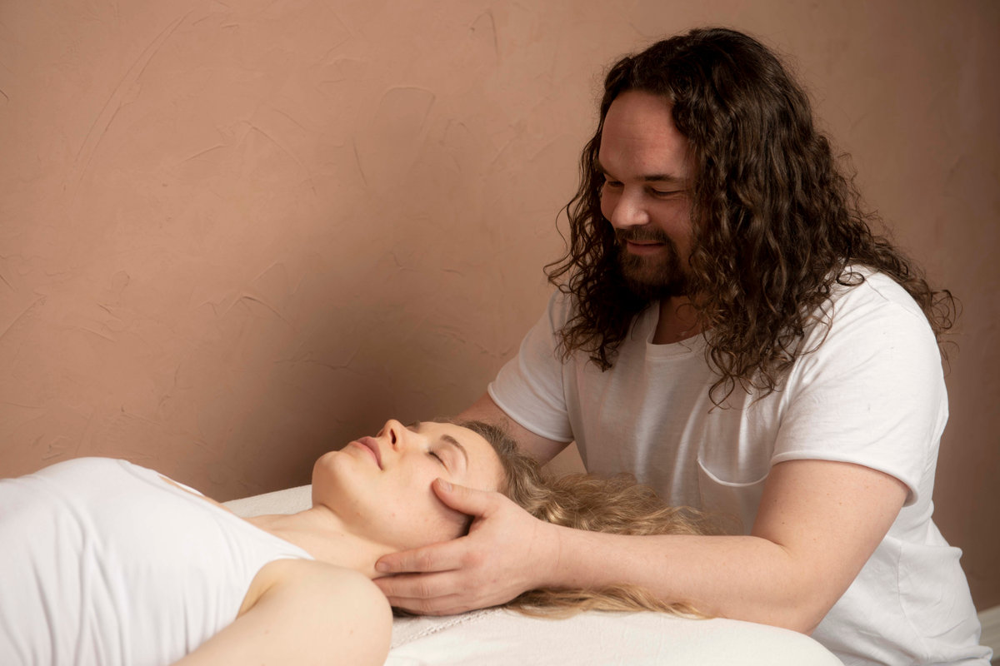

Behandlingen
Hvorfor ta jevnlig cranio?

Det moderne livet krever stadig mer av oss – og mange går rundt med følelsen av å aldri strekke til. Du kjenner kanskje igjen følelsen: Du våkner allerede sliten, kroppen er tung, tankene kverner. Du kjenner på ansvar for andre, for jobben, familien, livet – men vet knapt hvordan du skal ta vare på deg selv. Hjertet banker, nakken er stram, søvnen er urolig, og du klarer ikke å koble helt av, selv ikke når du prøver.
Dette er ikke tegn på svakhet. Det er kroppen som signaliserer at den er i ferd med å gå tom.
Mange som søker hjelp beskriver en følelse av indre uro, at de er overveldet av små ting, eller at de ikke kjenner seg selv igjen lenger. De sier ting som: «Jeg har alt på papiret, men jeg kjenner ingen glede», eller «det er som om kroppen aldri finner hvile – selv når jeg hviler». Dette er nervesystemet i ubalanse. Og det trenger hjelp til å regulere seg.
Når kroppen lukker ned – og hvordan vi åpner igjen
Når vi lever i konstant stress – selv lavt, men vedvarende – går nervesystemet i overlevelsesmodus. Det betyr at kroppen spenner seg, sansene skjerpes, og systemet blir værende i høy beredskap. Over tid fører dette til symptomer som spenningshodepine, tåkehode, svimmelhet, søvnproblemer og en følelse av å være «på» hele tiden – uten av-knapp.
Craniosacralterapi jobber direkte med dette. Det er ikke en quick fix, men en dyp og subtil metode for å hente deg hjem igjen – til kroppen, pusten og nervesystemets naturlige rytme. I stedet for å behandle symptomene hver for seg, møter cranio hele deg. Med myke, lyttende hender og dyp tilstedeværelse inviteres kroppen din til å gi slipp – ikke ved press, men gjennom trygghet.
Når kroppen kjenner seg trygg, skjer det noe. Det sympatiske nervesystemet – det som holder deg i overlevelse – kan gi slipp. Og det parasympatiske systemet – det som styrer hvile, fordøyelse, regenerering – får slippe til. Da kan tårer komme. Søvn bli dypere. Hjertebank og uro avta. Du kan begynne å puste igjen – helt ned.
En praksis for deg som bærer mye
Cranio er spesielt kraftfullt for deg som bærer mye ansvar – og som har lært å «klare deg selv». For deg som er der for andre, men kanskje har glemt hvordan du er der for deg selv. Som har mistet bakkekontakten i jakten på å holde alt sammen.
Regelmessig cranio er ikke luksus. Det er nødvendig vedlikehold av nervesystemet. En måte å hente deg inn igjen, før kroppen roper for høyt. Mange kommer med diffuse plager: «Jeg er sliten, men får ikke sove», «Jeg føler meg overstimulert», «Jeg kjenner meg ikke lenger levende». Det er ikke noe galt med deg. Du er ikke syk. Du er overveldet. Og kroppen trenger støtte til å finne tilbake til sin rytme.
Gjennom jevnlig cranio lærer kroppen igjen hvordan det kjennes å være trygg. Å være hel. Å puste med hele seg.
Vil du kjenne dette i kroppen i stedet for å lese om det? Timene er 80 minutter.
Book time ↗